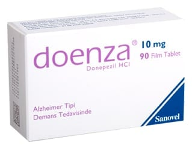

Doenza 10 mg Film Kaplı Tablet, 28 Tablet

Ne için kullanılır
KT · Bölüm 1DOENZA (Donepezil hidroklorür) 10 mg film kaplı tabletler, açık sarı renkli, yuvarlak film kaplı tabletlerdir. Her film kaplı tablet 10 mg donepezil hidroklorür içerir. DOENZA, 28 ve 90 film kaplı tablet içeren blister ambalajlarda piyasaya sunulmuştur.
DOENZA, hafif ve orta şiddetli Alzheimer tipi bunama belirtilerinin tedavisinde kullanılır ve etkin maddesi donepezil hidroklorür, asetilkolinesteraz inhibitörleri olarak anılan bir ilaç sınıfına aittir.
DOENZA, yalnızca erişkin hastalarda kullanılır.